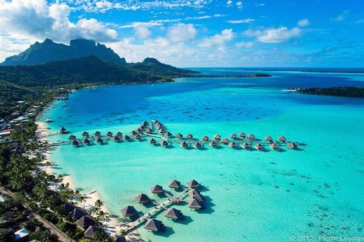
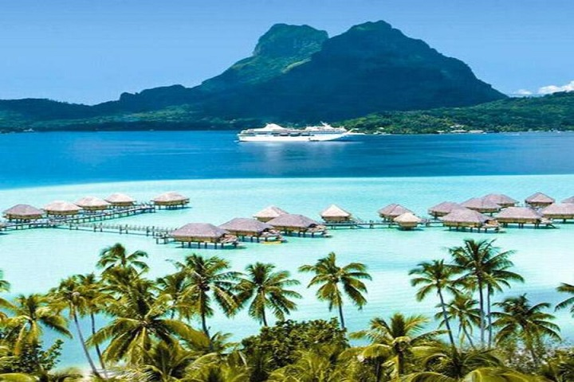
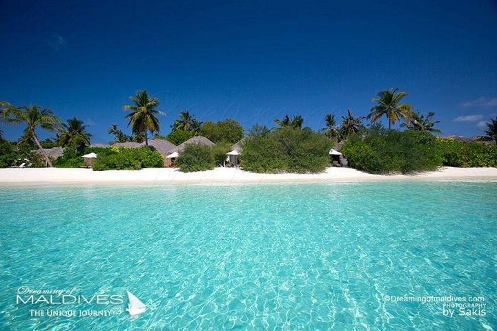
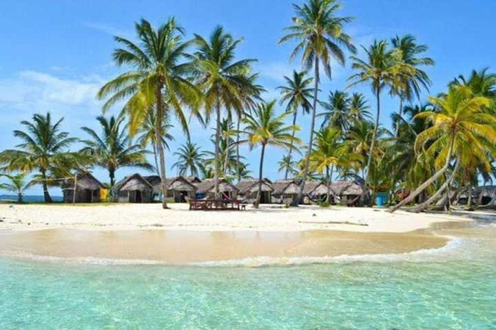
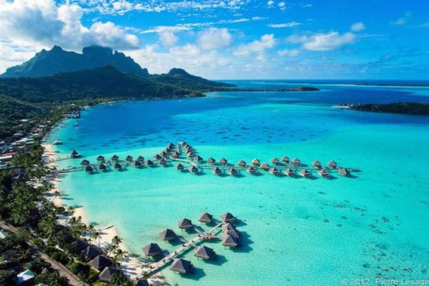
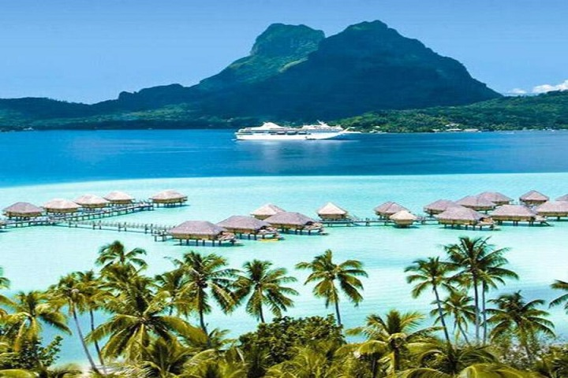
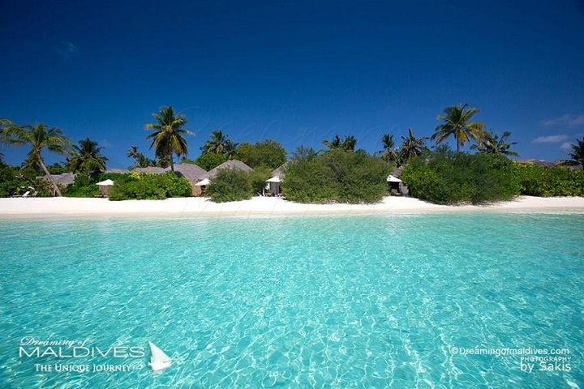
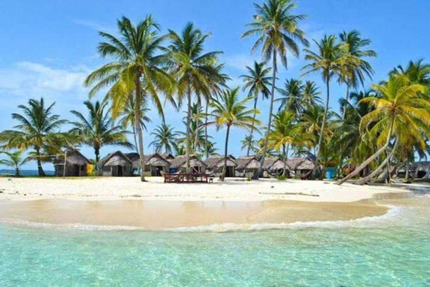
Les Caraïbes (également nommées la Caraïbe, l'espace Caraïbe, ou encore l'espace des Caraïbes) sont une région des Amériques qui comprend la mer des Caraïbes, ses îles (certaines entourées par la mer des Caraïbes et d'autres bordant à la fois cette dernière et l'océan Atlantique Nord) et les côtes environnantes. Située en grande partie sur la plaque des Caraïbes, la région compte plus de 700 îles, îlots, récifs et cayes.
La géographie est essentiellement tropicale et le climat est fortement influencé par la température de la mer et les précipitations, la saison des ouragans entraînant régulièrement des catastrophes naturelles. En raison de leur climat tropical et de leur géographie insulaire de basse altitude, les Caraïbes sont vulnérables à un certain nombre d'effets du changement climatique, notamment l'augmentation de l'intensité des tempêtes, l'élévation du niveau de la mer, des saisons sèches plus longues. Les Caraïbes ont été occupées par des peuples indigènes depuis au moins 3600 av. J.-C. Lorsque la colonisation européenne a suivi l'arrivée de Christophe Colomb, la population a été rapidement décimée par des pratiques de travail brutales, l'esclavage et la maladie, et sur de nombreuses îles les Européens ont supplanté les populations indigènes par des Africains réduits en esclavage. Après l'indépendance d'Haïti par rapport à la France au début du xixe siècle et le déclin de l'esclavage, les nations insulaires acquirent progressivement leur indépendance avec une vague de nouveaux États au cours des années 1950 et 1960. En raison de la proximité des États-Unis, il existe également une longue histoire d'intervention américaine dans la région.
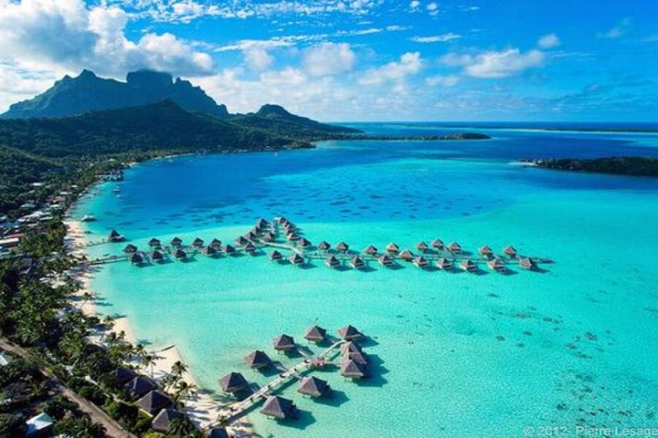
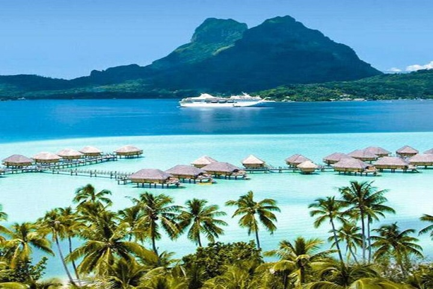
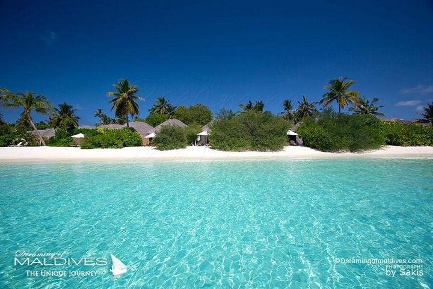
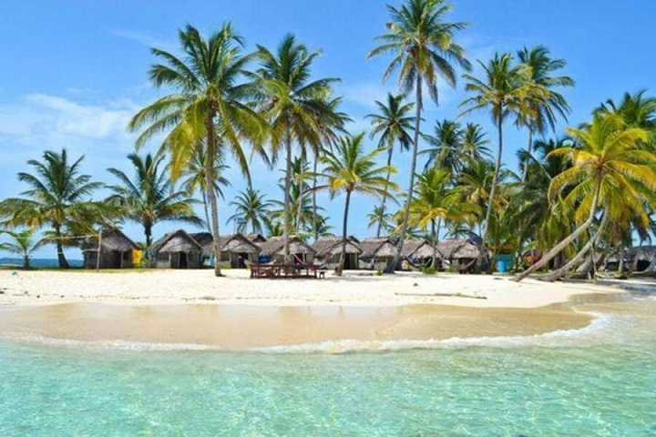